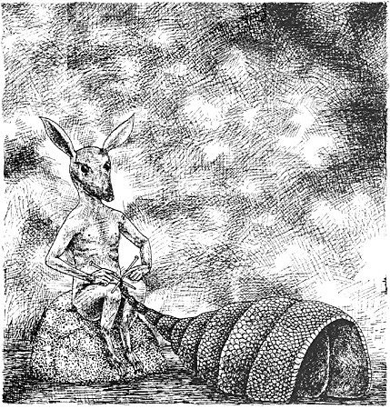
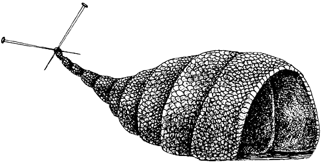
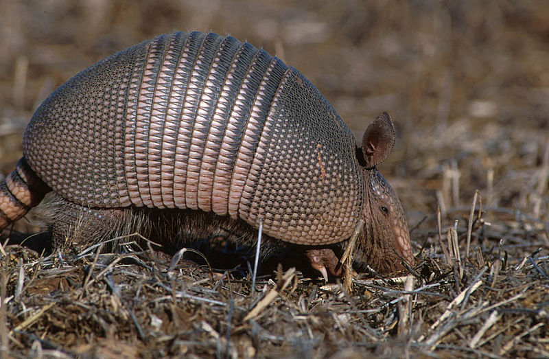
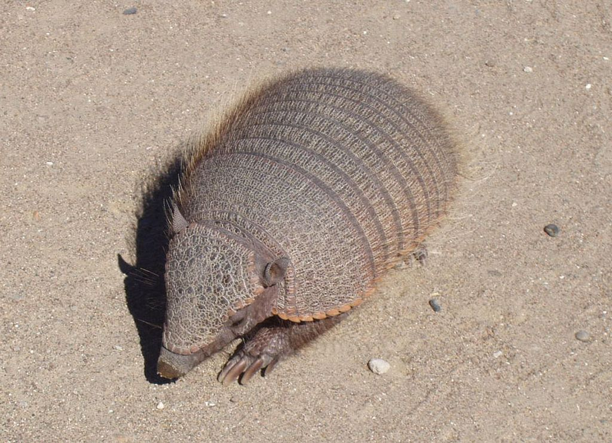
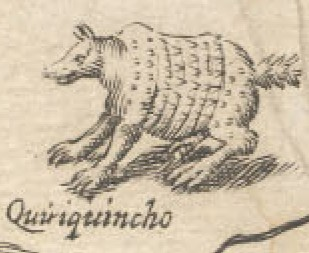
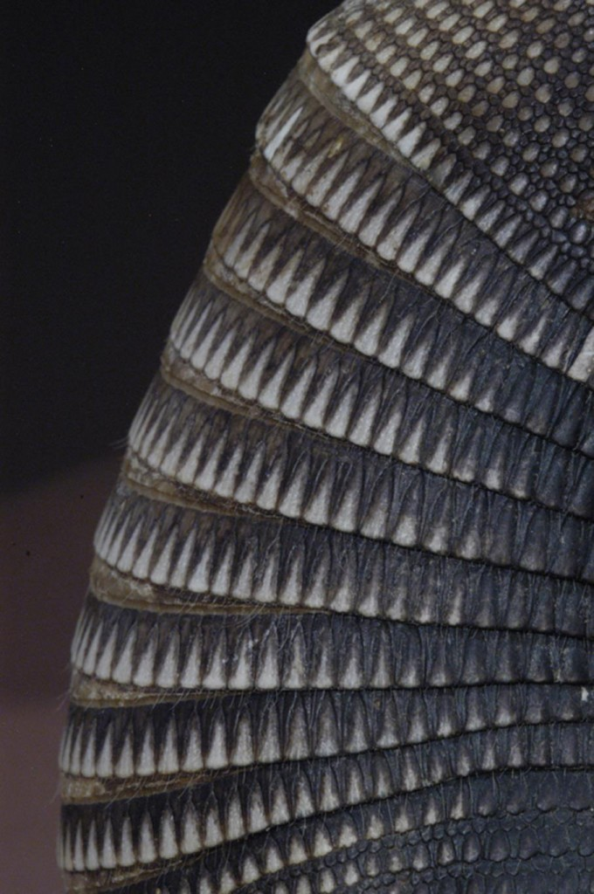
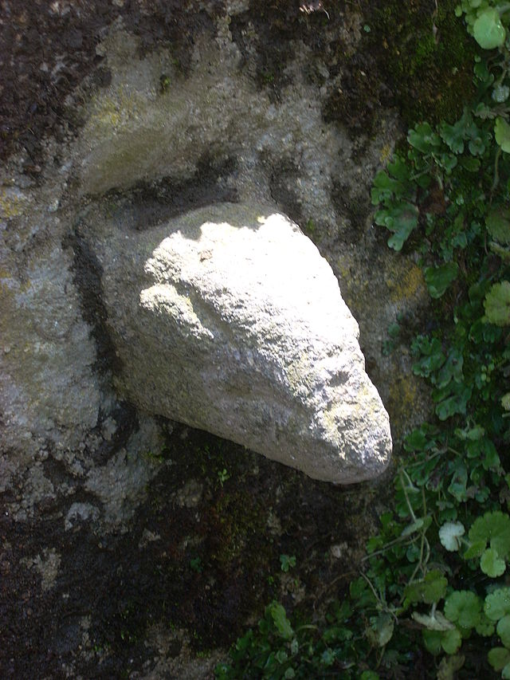
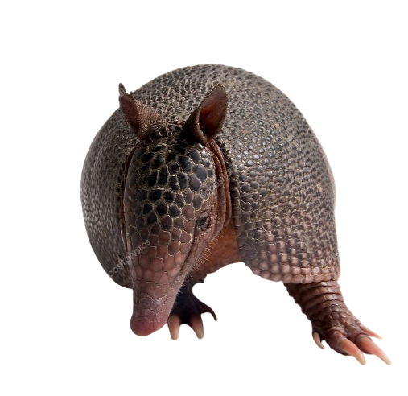
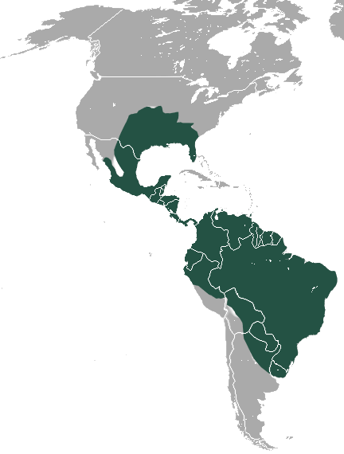

Relación con las culturas prehispánicas
Leyenda: El traje del armadillo
Hace muchísimos años, el armadillo tenía una piel tan delgadita que apenas lo protegía del frío de la noche. Al primer manto de sereno que le caía en la espalda, se sentía entumecido. Para él era un sufrimiento no tener un buen traje encima, y se puso a pensar en cómo elaborar uno que le sirviera en todo tiempo, porque, como dice el refrán, "el golpe enseña al jinete.

Entonces el industrioso animal se puso a tejer su traje con mucho esmero para que le saliera muy fino. Llevaba quince días tejiéndolo, cuando recibió la invitación de su compadre el Tlacuache para que fuera a la boda de su ahijada.
Como el traje estaba todavía muy atrasado, empezó a hacerle puntadas grandes para así acabar más pronto. Ya casi para llegar a la colita, volvió a tejer fino.
Se había tardado tanto en tejerlo, que su traje acabó todo sucio y pensó: "¿Cómo puedo presentarme a la boda con este traje tan sucio? Pero ya no me da tiempo de lavarlo. No tendré más remedio que ponérmelo así."
Se vistió y se fue a la boda. A medio camino empezó a llover a cántaros. El aguacero lavó el traje, el sol lo secó y el armadillo llegó muy alegre a la boda en lo mero bueno, cuando estaban tocando los músicos. Se puso a bailar a medio patio, mostrando a todos su lindo traje, hecho con tanto trabajo.
Ya cuando estaba borrachito, se encogió en su casco, se hizo bolita y se echó a rodar por la cuesta para llegar más pronto a su casa.

Uso del armadillo en culturas prehispánicas
Los indígenas del Chaco paraguayo gustan mucho de su carne y es parte de su dieta. Muchas veces cocinan la carne en la propia armadura del armadillo. La grasa del tatú es utilizada con fines medicinales. Del mismo se elaboran jarabes caseros para la tos, bronquitis, asma, reuma, golpes, llagas, etc. En Colombia y Ecuador es consumido por la nación Awá.


Legendario habitante del Mayab
En la vida de las comunidades mayas ancestrales, y hasta nuestros días, el “Quirquincho” ha jugado un papel muy importante. Las fuentes históricas nos revelan que su figura ha quedado representada en fachadas de edificios, bajorrelieves arquitectónicos y en la alfarería maya. Quizá haya sido venerado como un animal o ser sagrado, mágico o religioso; o por la riqueza y suavidad de su carne comestible que desde tiempos ancestrales ha formado parte de la dieta del pueblo maya.


El armadillo en el arte antigua
El armadillo de nueve bandas (Dasypus novemcinctus) es otro de los animales que llamaron la atención de los artistas alfareros de la cultura tlatilca. Formaba probablemente parte de la dieta de la población, pero quizá significaba más que un simple alimento. Sumamente prolífico, armado de su extraño caparazón, inexpugnable cuando se enrolla, veloz y huidizo, benéfico para contrarrestar los estragos de las hormigas arrieras, este singular animal debió haber poblado mitos y leyendas. Su forma elegante inspiró a más de un creador tlatilca.

Una de las esculturas más representativas del Armadillo se ubica dentro del área maya. Se encuentra en Chichen Itzá, en la estructura conocida como “la iglesia”. En esta estructura se encuentra como adorno en su fachada superior con mascarones del dios Chac y otras representaciones de un supuesto dios que emerge de una coraza de armadillo. Existe otro aspecto sorprendente e importante relacionado con la concha del armadillo, que tiene forma de almendra, que está ligado íntimamente con la geometría sagrada, símbolo del mundo. En diversas tradiciones ancestrales se alude a esta antigua forma ligada a los orígenes, a la divina proporción, como un aspecto sagrado. La forma de la almendra se liga al movimiento de la tierra con respecto al sol, movimiento y trazo celeste que da pauta a los equinoccios y solsticios.


Influencia del armadillo en los pueblos prehispánicos
La influencia de los armadillos en la vida cotidiana del pueblo maya prehispánico no se limitó a las creencias y asociación de su figura, sino que fue también motivo de representaciones que no fueron exclusivas en el área maya, siendo representado en casi todas las culturas prehispánicas que habitaron Mesoamérica. El armadillo es considerado como un animal especial que ha sido motivo de estudios e investigaciones diversas. La armadura o caparazón del que está dotado le funciona como defensa suficiente de los pequeños depredadores y aves rapaces, mas no así en contra de los coyotes, perros o felinos de mayor tamaño.

Una de las esculturas más representativas del Armadillo se ubica dentro del área maya. Se encuentra en Chichen Itzá, en la estructura conocida como “la iglesia”. En esta estructura se encuentra como adorno en su fachada superior con mascarones del dios Chac y otras representaciones de un supuesto dios que emerge de una coraza de armadillo. Existe otro aspecto sorprendente e importante relacionado con la concha del armadillo, que tiene forma de almendra, que está ligado íntimamente con la geometría sagrada, símbolo del mundo. En diversas tradiciones ancestrales se alude a esta antigua forma ligada a los orígenes, a la divina proporción, como un aspecto sagrado. La forma de la almendra se liga al movimiento de la tierra con respecto al sol, movimiento y trazo celeste que da pauta a los equinoccios y solsticios.

El armadillo como objeto de estudio
El armadillo es considerado como un animal especial que ha sido motivo de estudios e investigaciones diversas. La armadura o caparazón del que está dotado le funciona como defensa suficiente de los pequeños depredadores y aves rapaces, mas no así en contra de los coyotes, perros o felinos de mayor tamaño. Los armadillos viven en casi todas las zonas: planas, cerros, desiertos y bosques húmedos. Solamente no se localizan en pantanos o zonas muy frías. Ellos mismos cavan rápidamente sus madrigueras que son tortuosas y con varias salidas.

Fisionomía del armadillo
Así mismo, este pequeño mamífero está dotado de extremidades cortas, pero fuertes y robustas, equipadas con garras que les permiten excavar para hacer sus madrigueras, y para conseguir alimento, consistente en pequeños reptiles, anfibios, hormigas, gusanos, y otros insectos.
Los armadillos viven en casi todas las zonas: planas, cerros, desiertos y bosques húmedos. Solamente no se localizan en pantanos o zonas muy frías. Ellos mismos cavan rápidamente sus madrigueras que son tortuosas y con varias salidas.


Ubicación geográfica
En Yucatán encontramos una amplia biodiversidad de flora y fauna entre la que podemos citar al Armadillo, mejor conocido como “Huech”. Su ubicación geográfica, su clima caluroso, así como sus épocas de lluvias en el verano hacen de estas tierras el lugar idóneo para la reproducción, desarrollo y cohabitación de este pequeño mamífero, así como de una amplia diversidad de especies únicas de estas tierras del Mayab


Enfermedades causadas por el armadillo
El armadillo puede ser portador de ciertos microorganismos que producen en el ser humano enfermedades como el Mycobacterium leprae, bacteria causante de la lepra. Así mismo, se le considera reservorio de protozoos flagelados de la especie Trypanosoma cruzi, que causa en los humanos, especialmente en niños, una dolencia muy grave llamada enfermedad de Chagas. Los armadillos viven en casi todas las zonas: planas, cerros, desiertos y bosques húmedos. Solamente no se localizan en pantanos o zonas muy frías. Ellos mismos cavan rápidamente sus madrigueras que son tortuosas y con varias salidas.